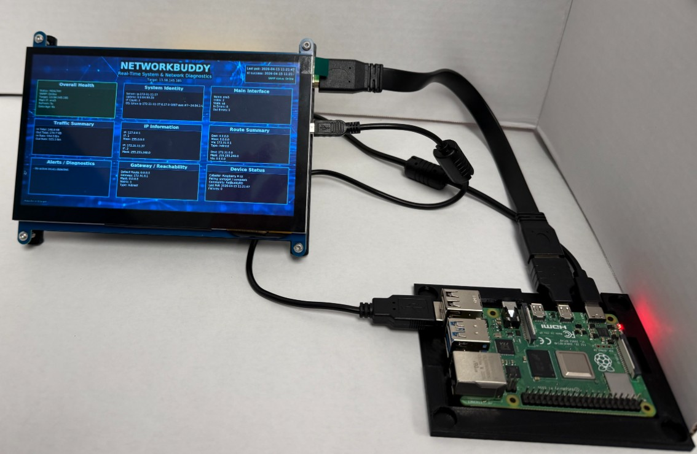
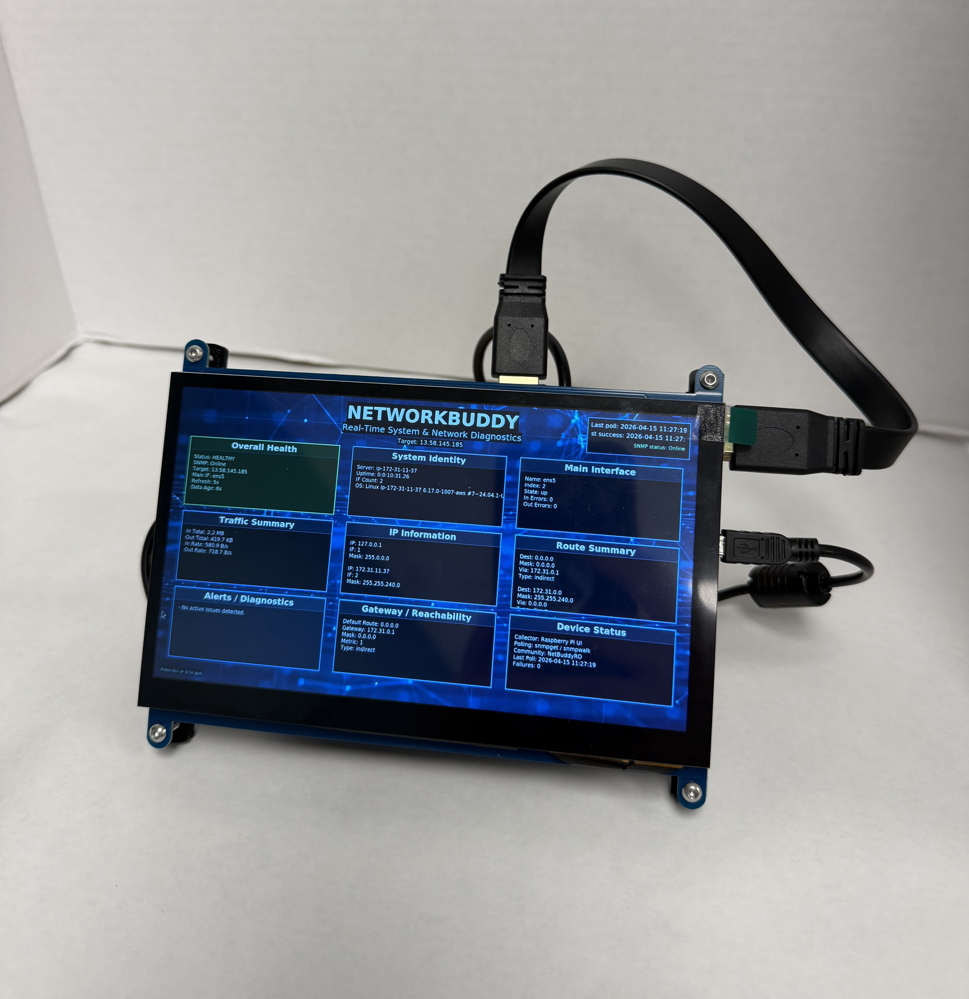
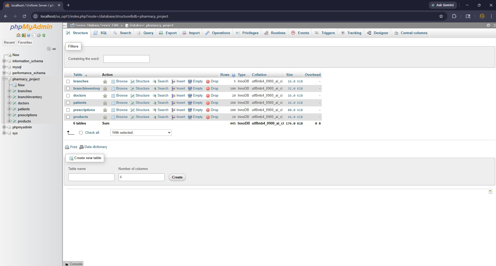
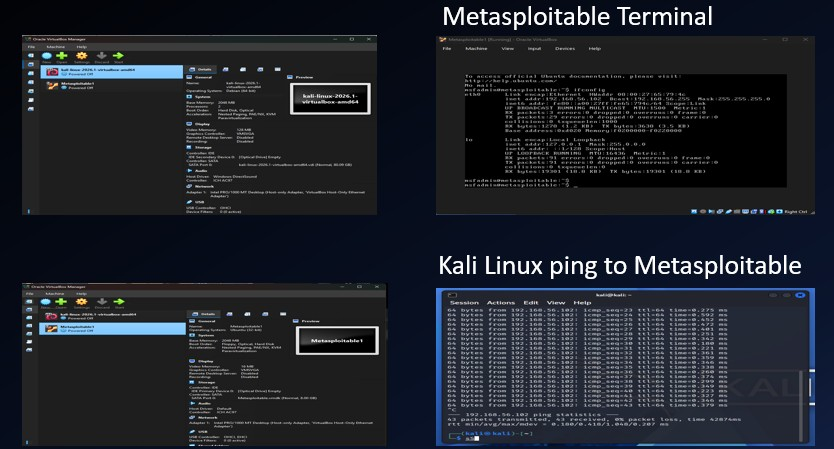

Project Gallery
This gallery highlights screenshots and images from my portfolio projects, including NetworkBuddy, database work, and cybersecurity lab activities.
Slideshow Gallery

NetworkBuddy hardware setup


